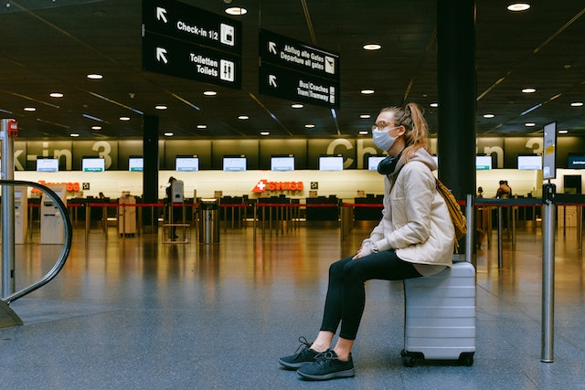

Tips para garantizar una experiencia positiva en el aeropuerto
Consejos prácticos para lograr una experiencia agradable y sin complicaciones al viajar por el aeropuerto.
Viajar en avión puede ser emocionante, pero también puede resultar estresante, especialmente cuando se trata de enfrentarse a un aeropuerto concurrido. Sin embargo, con una buena planificación y algunos consejos útiles, puedes garantizar una experiencia positiva en el aeropuerto y comenzar tu viaje de la mejor manera posible. Acá te muestro 10 tips que te ayudarán a hacerlo:
Planifica con anticipación:
La clave para una experiencia tranquila en el aeropuerto es la planificación anticipada. Verifica los horarios de tu vuelo, la ubicación de la terminal y las restricciones de equipaje con anticipación. Asegúrate de llegar al aeropuerto con tiempo suficiente para evitar el estrés de correr contra el reloj.
Realiza el check-in en línea:
Aprovecha la opción de realizar el check-in en línea que ofrecen muchas aerolíneas. Esto te ahorrará tiempo al llegar al aeropuerto y te permitirá elegir tu asiento de antemano. Además, algunos aeropuertos incluso ofrecen mostradores de drop-off exclusivos para los pasajeros que ya han realizado el check-in en línea.
Conoce las normas de seguridad:
Familiarízate con las normas de seguridad del aeropuerto para evitar contratiempos innecesarios. Asegúrate de saber qué artículos no puedes llevar en tu equipaje de mano y prepárate para los controles de seguridad, como quitarte los zapatos y sacar los líquidos de tu equipaje.
Etiqueta tu equipaje:
Coloca etiquetas claras y distintivas en tu equipaje facturado y de mano. Incluye tu nombre, dirección y número de contacto en caso de que se extravíe o se confunda. Esto facilitará su identificación y ayudará a que te lo devuelvan rápidamente si ocurre algún problema.
Lleva entretenimiento:
El tiempo de espera en el aeropuerto puede ser largo, así que lleva contigo algo de entretenimiento, como un libro, una revista, música o una película descargada en tu dispositivo. Esto te mantendrá ocupado y distraído durante la espera.
Mantente hidratado y bien alimentado:
Bebe suficiente agua y lleva contigo una botella reutilizable que puedas llenar después de pasar el control de seguridad. También es recomendable llevar algunos snacks saludables para mantener tu energía y evitar pagar precios excesivos en las tiendas del aeropuerto.
Viste ropa y calzado cómodos:
Elige ropa y calzado cómodos para viajar. Opta por capas que puedas agregar o quitar según la temperatura en el aeropuerto y en el avión. Además, asegúrate de llevar zapatos que sean fáciles de quitar y poner, ya que tendrás que pasar por el control de seguridad.
Mantén tus documentos a mano:
Ten tus documentos de viaje, como tu pasaporte, tarjeta de embarque y cualquier otro documento importante, en un lugar de fácil acceso. Esto te ahorrará tiempo y te evitará tener que rebuscar en tu bolso o mochila en el momento crucial.
Mantén la calma:
Aunque los aeropuertos pueden ser agitados y caóticos, es importante mantener la calma. Mantén la paciencia y sé amable con el personal del aeropuerto y los demás pasajeros. La cortesía y el respeto pueden hacer una gran diferencia en tu experiencia general.
Sé puntual:
Por último, pero no menos importante, llega al aeropuerto a tiempo. Cumplir con los horarios establecidos por la aerolínea garantizará que no te pierdas tu vuelo y evitará situaciones de estrés de última hora. Recuerda que es mejor estar temprano y tener tiempo para relajarte antes de abordar.
Si seguís estos tips vas a poder disfrutar de una experiencia positiva en el aeropuerto. Desde la planificación anticipada hasta mantener la calma, estos consejos te van a ayudar a hacer que tu paso por el aeropuerto sea más fluido y agradable. Recordá que la clave está en la organización, la paciencia y una actitud positiva.
¡Disfruta de tu viaje!
Azul